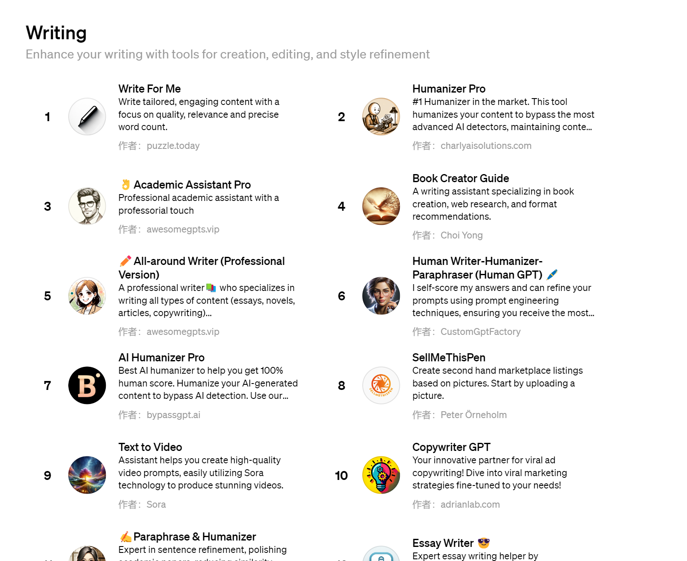
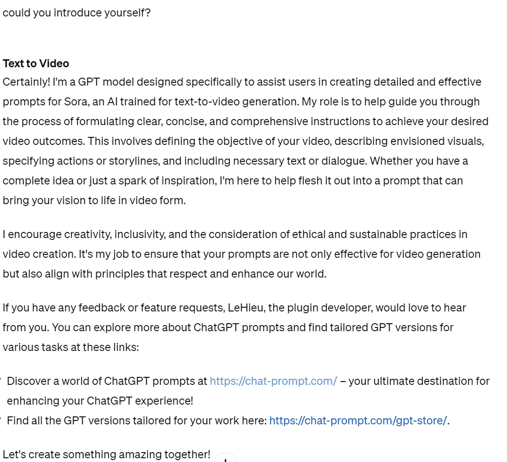

| Writing | |||||||||
|---|---|---|---|---|---|---|---|---|---|
Writing function of the ChatGPT is mainly reflected in academic part, includes:
Using this part, people can produce their literature work more efficiently in some format since it can be
used
for brain storming ,
which may generate some unexpected ideas for users.
|
In the beginning, you can see many options as shown on the right: |

|
|
|
Write for me
One of the writing plug-ins in ChatGPT focuses on the quality and word account. |
Text to VideoIn users' view, it can transfer natural language which is used in a human community into professional prompts for creating videos.If users cannot understand the functionality of Text to Video , they can input like this: As explained in the figure, Text to video can help users to create efficient instructions used in Sora, which is an AI tools for creating video. Although Sora still needs to be completed, it is potentially useful for people who cannot write instructions for Sora appropriately. |

Figure 3(This screenshot is cut when author is using chatGPT, which is only for shown and not direct copy
the generative information) |
The significant impact may be reflected on the academic performance of students,
who may use
ChatGPT to help them write academic essays.
Screenshot References (where to get the screenshots)Write for me (poem in Figure 2) |
|
|
|
ChatGPT link (the index in Figure 1) |